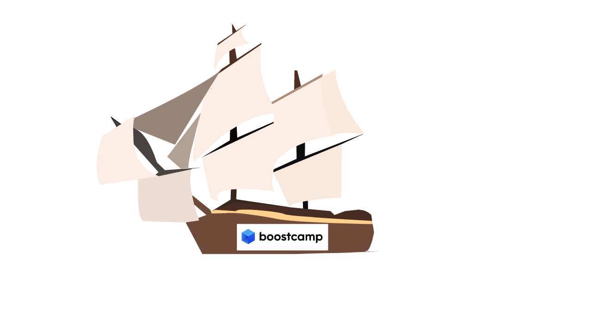

PortPolio
거친 풍랑과 같은 세상
네이버 부스트캠프
를 나침반 삼아 앞으로 나아가고 싶습니다

이름 : 정동구
학력 : 아주대 사이버보안학과
나이 : 2000.08.03
주요 SKILL
Redux
를 이용해 상태 관리를 할 수 있습니다
useState, useParams 등 다양한
react hook
을 이용해 CSR를 할 수 있습니다
타입스크립트
를 이용해 안정적으로 코드개발을 할 수 있습니다
Tailwind
와
Next.js
를 이용해 서버사이드렌더링 페이지를 제작할 수 있습니다
Webgl
를 사용하여 원하는 계층 모델을 만들 수 있습니다
Project